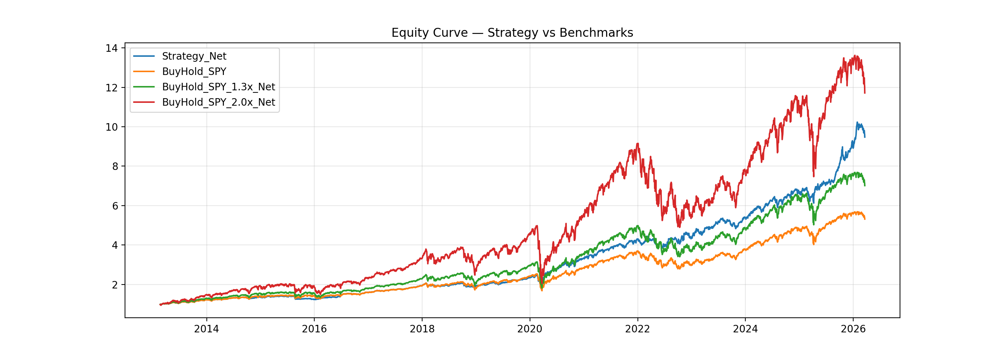
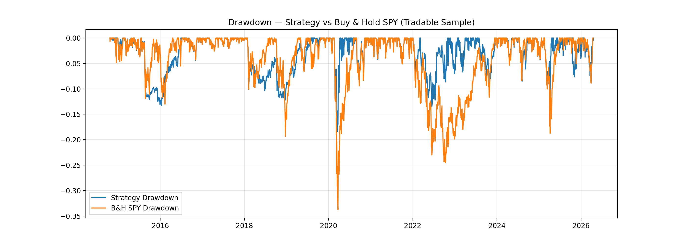

SPY Timing + Allocation
Visuals
Equity curve (interactive)
Source: docs/data/equity_curve_TURBO_phase7_BASE.csv
Drawdown (computed from equity)
Drawdown is computed from the equity series (peak-to-trough).
Rolling 12-month returns (computed)
Rolling return = Equity(t) / Equity(t−252) − 1 (approx. 1 trading year).
Figures (optional PNGs)


Missing images are hidden automatically.